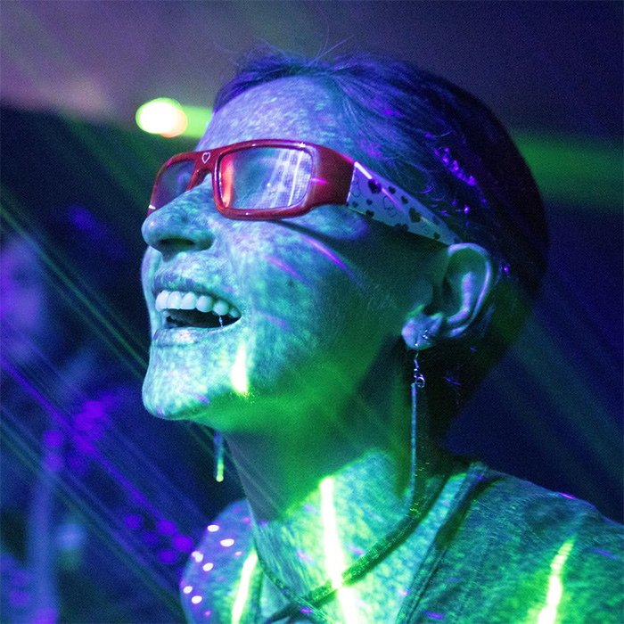
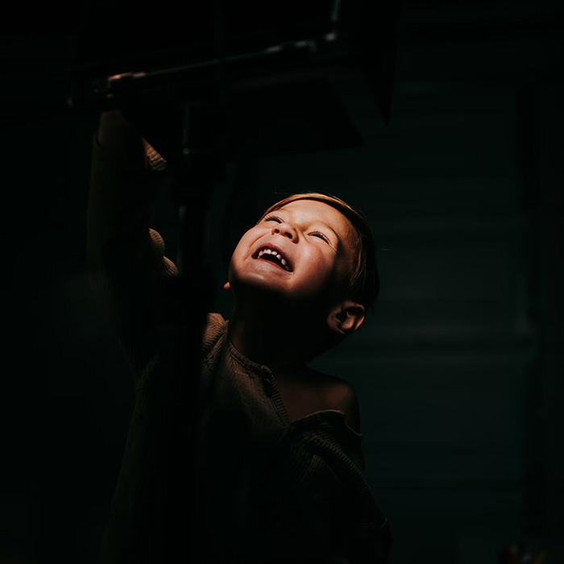
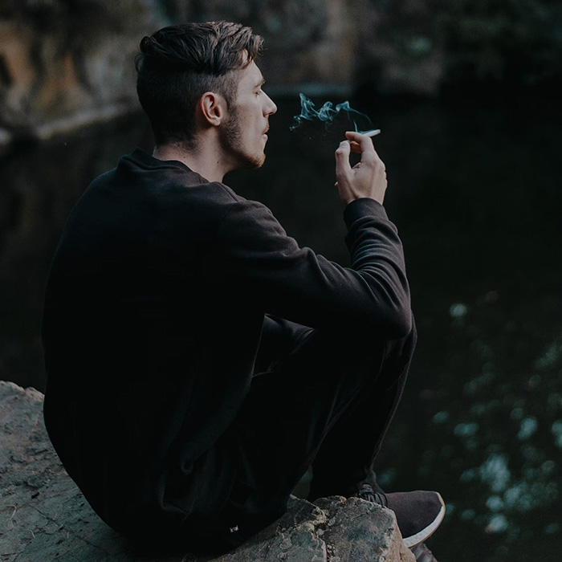
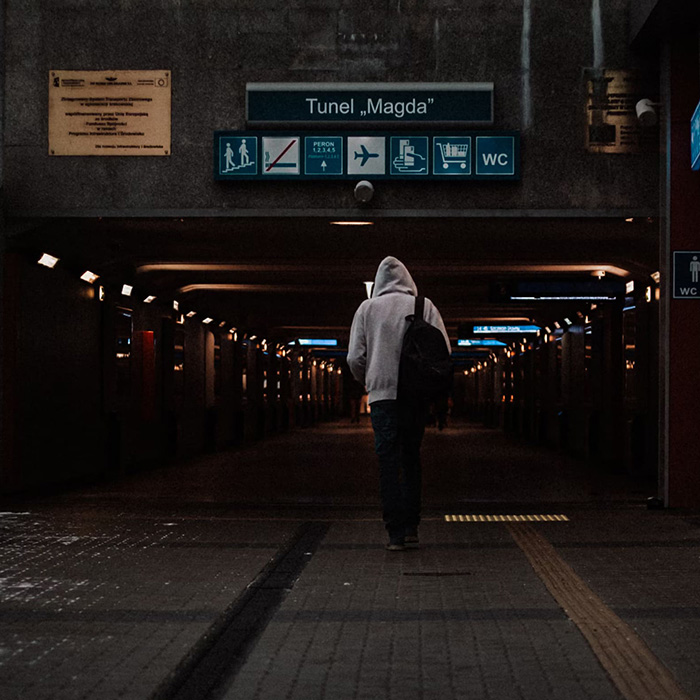
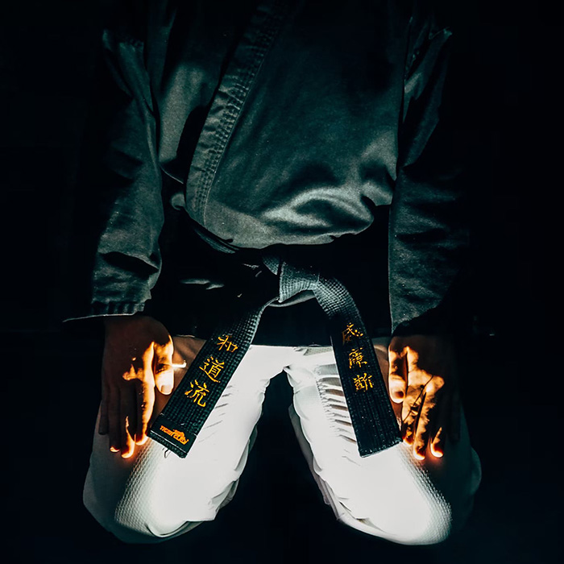

Фритрек и нулевой спринт: Подготовка к работе
</Восторг>
Это было самое начало пути. На этом этапе важно было проникнуться основами и настроиться на учёбу. И, возможно, подумать, как новые знания могут повлиять на ваше будущее.
Да! Наконец-то! Я начала что-то большое и важное! То, что собиралась сделать уже несколько лет. Я собой горжусь. Так что – только вперед! Настрой боевой.
1 спринт: Я – чистый лист
</Страх>
На первых этапах мы работали со страхами и сомнениями, которые часто испытывают новички. Один из них – страх перед чистым листом. Это, конечно же, намного сложнее, чем боязнь куска бумаги. Часто за этим ощущением скрываются более глубокие вопросы: с чего начать? а вдруг будет слишком сложно? А что, если я не справлюсь?
Все эти «А что, если…» И ответ на каждый из этих вопросов: «Ну что, значит, ты не справилась, значит, ты – «тряпка». Катастрофа!
1 спринт: А если не получится?
</Радость>
Первый проект — позади! Но это всё ещё самое начало пути. Радость могла быстро померкнуть и смениться ожиданием провала. Или вы, наоборот, могли вдохновиться успехами и поверить в себя.
Это была радость новичка, у которого что-то получилось. Пусть это «что-то» и кажется песчинкой Сахары. Но получилось же! Значит, не безнадежно?
2 спринт: Погоня за идеалом
Печаль
На этом этапе вы уже достаточно разбирались в основах вёрстки, чтобы понять, как много ещё впереди. Вы могли попытаться погнаться за идеалом и понять, что он недостижим. А, может, вы вовсе и не подвержены перфекционизму и вместо того, чтобы сделать идеально, старались просто сделать.
Как же я хотела сделать идеально! И у меня бы получилось. Обязательно получилось бы. Но времени, почему-то нехватило. Печалька. Ну что ж, небольшой перекур и… едем дальше.
2 спринт: О тех, кто рядом
</Одиночество>
Всё это время вы были не одиноки (хотя, возможно, иногда и чувствовали, что одни против целого мира). Вас окружали одногруппники, команда сопровождения и просто близкие люди, которым можно пожаловаться, если очередной макет просто так не поддавался. Осваивать что-то новое легче, когда рядом есть единомышленники, не правда ли?
Просить помощи или не просить – вот в чем вопрос. Или поднапрячься и найти ответ самой? О'кей, Google? Молчит. Все мы в конечном счете одиноки и каждый преодолевает свой путь сам.
3 спринт: Обходные стратегии
</Варианты>
На этом курсе вы постоянно решали разные задачи. В какой-то момент вам могло показаться, что решения просто иссякли. Значит, пришло время посмотреть на задачу под другим углом.
Много раз казалось, что это конец. Продолжать не стОит, поскольку у меня нет понимания того, что происходит. Но приложение «Стратегии» мне каждый раз напоминало, что грести можно и справа, и слева.
3 спринт: Когда опускаются руки
</Концентрация>
Во время учёбы часто возникает чувство, когда не знаешь, за что хвататься. Вроде и проектную пора сдавать, и задачи хочется порешать, и в теории получше разобраться, и жизнь не забыть пожить. В такие моменты очень нужна концентрация. Вспомните, откуда вы её черпали.
Да, руки опускались чаще, чем хотелось бы. Но смена деятельности помогала. Не выходит кодить – побегаем на дорожке. Выбилась из сил бегать? Тогда снова «зеленый свет» умственному труду.
«Сейчас я здесь»
</Настоящее>
Сейчас вы уже очень много знаете о вёрстке. Но это только начало. Во-первых, впереди ещё много материала про «красотищу». Во-вторых, с окончанием курса учёба не заканчивается. Вёрстка – это целый мир. И этот мир постоянно меняется. Познать его полностью не получится, но это тот случай, когда важен сам процесс познания. Ведь часто путь – и есть результат.
«Я знаю, что ничего не знаю» – говорил Сократ. А ведь тогда еще верстки и в помине не было. Шучу, конечно. Но на самом деле мысль о том, что ты не можешь знать всего, и есть стимул к постоянному движению вперед. И есть настоящее.